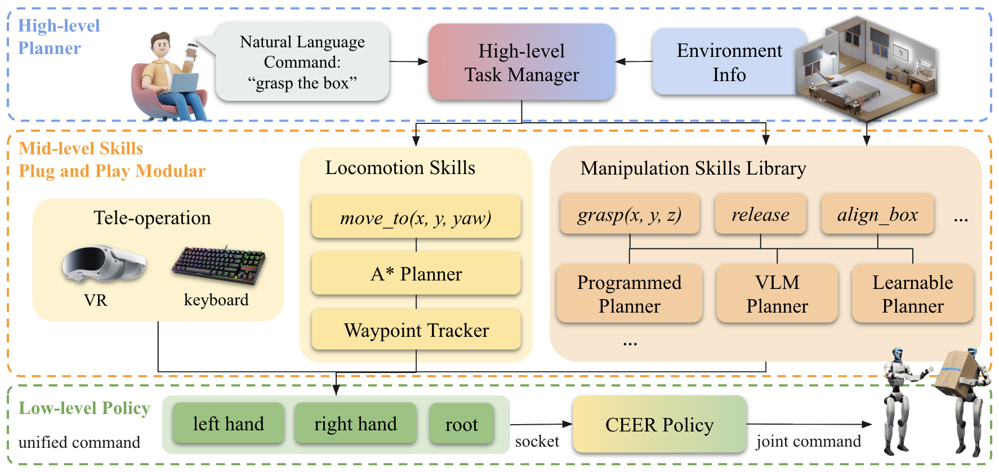

Abstract— Humanoid robots have achieved impressive loco-motion performance, yet contact-rich and long-horizon manipulation remains a major bottleneck. Manipulation is inherently contact-rich and demands compliant whole-body control for stable interaction, while its diversity and long-horizon nature favor modular, planner-compatible interfaces over joint-space tracking. We propose CEER, a compliant end-effector–root (EE-root) control abstraction for modular humanoid loco-manipulation within a hierarchical planning framework. CEER enables compliance-aware whole-body control in an interpretable task space defined by root motion commands and end-effector pose targets, and supports plug-and-play integration with heterogeneous high-level planners. A teacher–student framework is adopted to distill a general motion-tracking controller into a low-level policy that consumes only EE-root commands. We further construct a hierarchical system that integrates heterogeneous planners and task modules through the EE-root interface, enabling diverse manipulation tasks without retraining the underlying whole-body policy. Experiments in simulation and on hardware demonstrate 3.3 cm end-effector tracking accuracy with substantially reduced jerk compared to baselines, stable contact-rich manipulation under teleoperation, and up to 70% success in simulated single-object loco-manipulation tasks within a room-scale environment. These results indicate that compliant EE-root control provides a practical abstraction for humanoid loco-manipulation, enabling modular and scalable integration of diverse skills.
Overview of the proposed three-layer hierarchical system. At the high level, a language instruction is interpreted by an LLM-based skill manager, which selects and composes mid-level skills based on environmental information. The mid-level consists of plug-and-play locomotion and manipulation modules that generate unified end-effector and root commands. At the low level, a unified CEER policy converts these commands into joint-space actions. This modular design decouples task reasoning, skill execution, and low-level control, enabling scalable and extensible system integration.

Using Nerfies, you can re-render a video from a novel viewpoint such as a stabilized camera by playing back the training deformations.
There's a lot of excellent work that was introduced around the same time as ours.
Progressive Encoding for Neural Optimization introduces an idea similar to our windowed position encoding for coarse-to-fine optimization.
D-NeRF and NR-NeRF both use deformation fields to model non-rigid scenes.
Some works model videos with a NeRF by directly modulating the density, such as Video-NeRF, NSFF, and DyNeRF
There are probably many more by the time you are reading this. Check out Frank Dellart's survey on recent NeRF papers, and Yen-Chen Lin's curated list of NeRF papers.